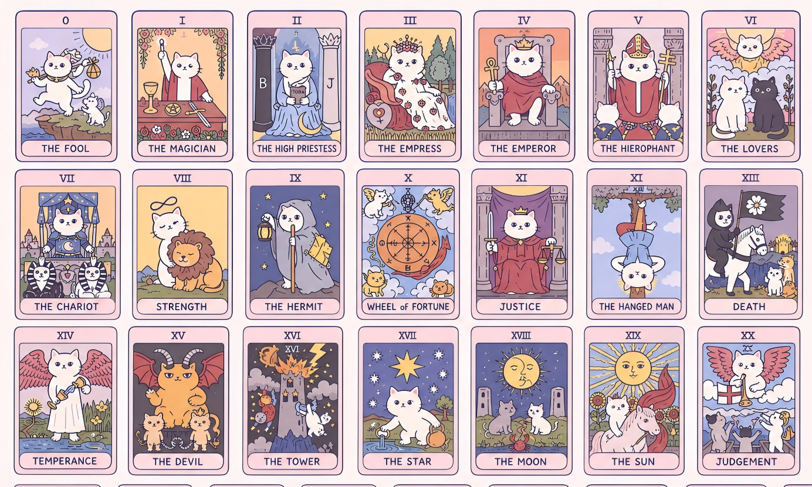

Human–AI interaction · Multimodal prototype
Feline Oracle
Turn an AI reading into a ritual you can participate in.
A playful cat tarot experience that combines a question, hand movement, a hidden card, and an interpretation. The interaction makes the user an active participant in the story.
The portfolio demo uses preset readings and does not call an AI service. Camera and voice are optional; mouse and text controls support the full sequence. This is playful fiction, not an assessment of animal behavior.

Experience at a glance
The interaction question
A text prompt followed by an answer is efficient, but it can remove the physical participation that makes a tarot reading feel intentional. Feline Oracle asks how gesture and pacing can give a generative experience a stronger sense of agency.
The audience described in the proposal includes curious cat owners and people interested in experimental, symbolic interaction.
Human input, system response
The original implementation uses MediaPipe hand tracking to detect movement for shuffling and fingertip hover for card selection. A separate text or voice step captures the person’s question.
Keeping these steps separate gives each input a purpose: the question establishes context, movement performs the ritual, and drawing a hidden card introduces chance. A hand gesture does not claim to reveal the user’s emotions or the cat’s intentions.
The AI boundary
The original source includes a Gemini request that combines a question with a selected card and its symbolic meaning. The AI’s intended contribution is stylistic interpretation, not diagnosis or prediction.
The portfolio edition preserves the interactive flow using a clearly labeled preset interpretation. The live AI call is disabled in this static demo.
Designing for failure
Camera-based input can fail because of permissions, lighting, or tracking quality. The source provides Skip Camera, manual shuffling, and random card drawing. Text entry remains available when voice recognition is unsupported.
These fallbacks keep the experience accessible while preserving its sequence. Further testing should compare gesture discoverability, accidental selections, and completion with and without camera access.
What is demonstrated
The original prototype includes the complete five-stage interface, a cat card library, gesture logic, voice input, and an AI integration path. The portfolio edition makes the non-AI interaction available directly from this site.
The proposal identifies gesture stability and consistent interpretive tone as development challenges. No recognition accuracy or user-study results are asserted.